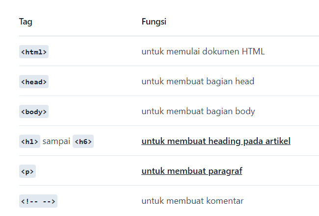

Tag adalah sebuah penanda awalan dan akhiran dari sebuah elemen di HTML. Tag dibuat dengan kurung sudut (<...>), lalu di dalamnya berisi nama tag dan kadang juga ditambahkan dengan atribut.
Contoh: <p>, <a>, <body>, <head>, dan sebagainya.
Tag selalu ditulis berpasangan. Ada tag pembuka dan ada tag penutupnya. Namun, ada juga beberapa tag yang tidak memiliki pasangan penutup. Tag penutup ditulis dengan menambahkan garis miring (/) di depan nama tag.
